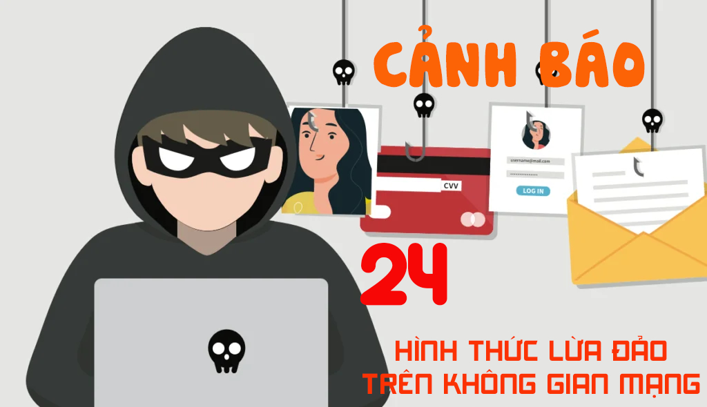
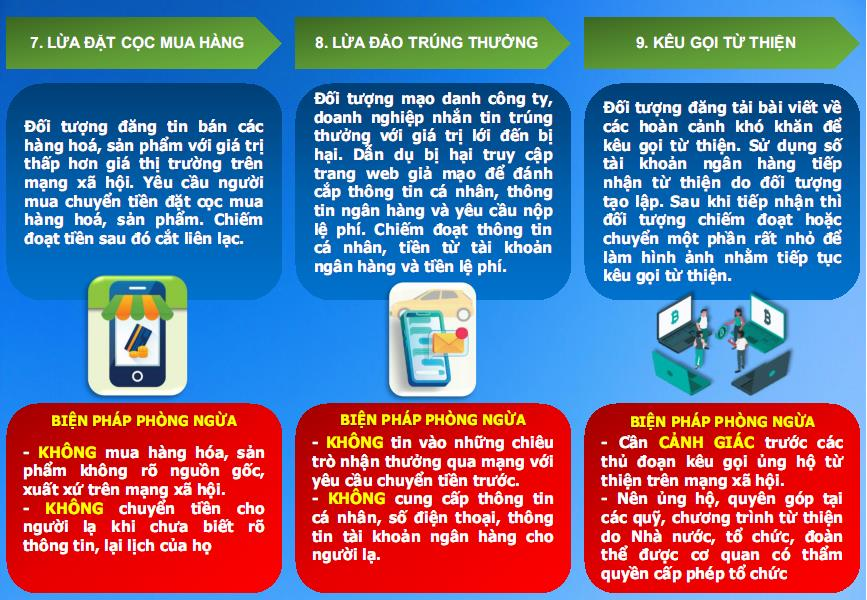
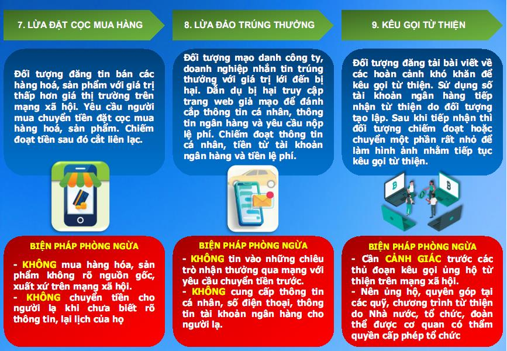
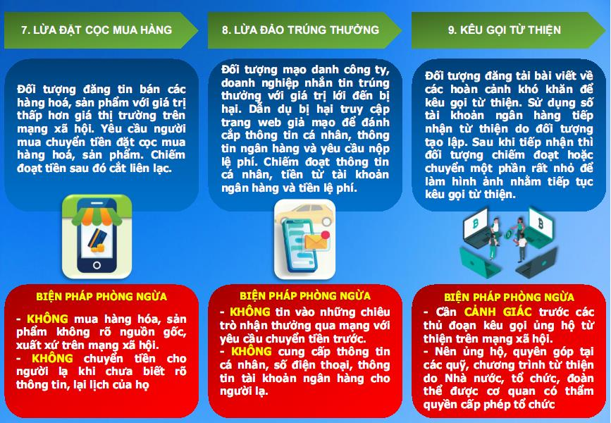
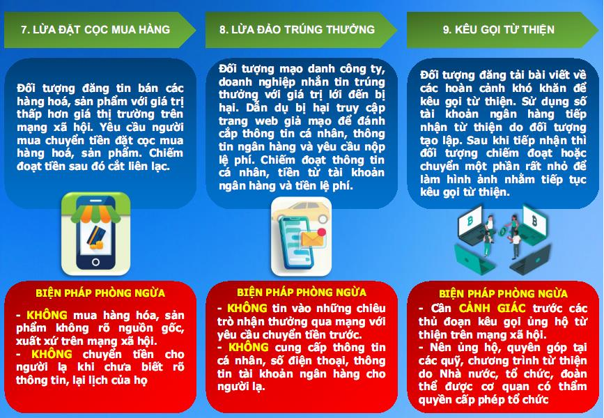

🌐 Cảnh giác cùng chúng em
Cùng nhau nâng cao cảnh giác, bảo vệ bản thân trước lừa đảo và bắt cóc online

 


Cùng nhau nâng cao cảnh giác, bảo vệ bản thân trước lừa đảo và bắt cóc online

Dự án "Cảnh giác cùng chúng em" giúp học sinh nhận biết các thủ đoạn lừa đảo, chia sẻ kỹ năng an toàn trên mạng và cùng nhau xây dựng môi trường học đường an toàn.
Các thủ đoạn lừa đảo phổ biến mà bạn cần biết.
Nguyên tắc vàng để tự bảo vệ bản thân.
Kỹ năng ứng phó khi gặp tình huống nguy hiểm.
Phương thức thủ đoạn tinh vi đến mức có “nạn nhân kép”, mỗi gia đình có đến vài người bị tấn công...
🔗 Xem thêm tại VietnamnetNữ sinh viên năm 3 bị các đối tượng trên mạng dẫn dắt và bắt cóc online, Công an TPHCM đã giải cứu thành công...
🔗 Xem thêm tại VietnamnetLiên tiếp nhiều vụ việc xảy ra tại nhiều địa phương, đối tượng nhắm đến học sinh và sinh viên...
🔗 Xem thêm tại VOV